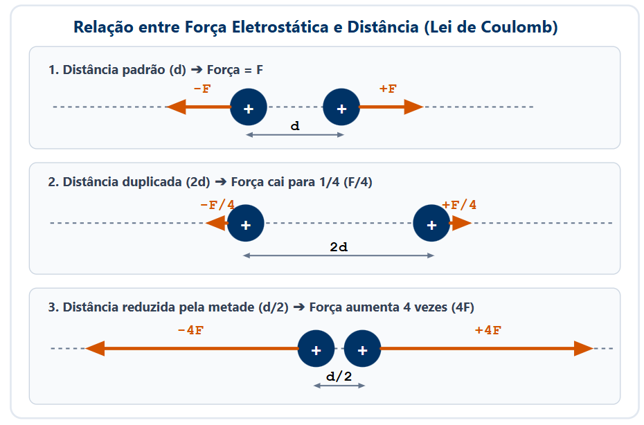

A Lei de Coulomb quantifica a intensidade da força de interação eletrostática entre duas cargas elétricas puntiformes. A força é diretamente proporcional ao produto dos módulos das cargas e inversamente proporcional ao quadrado da distância entre elas.
Por ser uma grandeza vetorial, a força elétrica possui módulo ($F = k_0 \cdot \frac{|q_1 \cdot q_2|}{d^2}$), direção (a reta que une os centros das duas cargas) e sentido (de atração para cargas opostas e de repulsão para cargas de mesmo sinal).
📖 Lei de Coulomb e Força Elétrica
1. Formulando a Lei de Coulomb
Desenvolvida por Charles Augustin de Coulomb no final do século XVIII, a lei estabelece que o módulo da força elétrica ($F$) entre duas cargas puntiformes $q_1$ e $q_2$, separadas por uma distância $d$, é calculado por:
$$F = k_0 \cdot \frac{|q_1 \cdot q_2|}{d^2}$$
Onde:
$F$: Força elétrica em Newtons ($\text{N}$).
$|q_1|$ e $|q_2|$: Módulos das cargas elétricas em Coulombs ($\text{C}$).
$d$: Distância entre as cargas em metros ($\text{m}$).
$k_0$: Constante eletrostática do meio (no vácuo, $k_0 \approx 9,0 \times 10^9\text{ N}\cdot\text{m}^2/\text{C}^2$).
2. Características Vetoriais da Força Elétrica
Direção: Reta suporte que une os pontos onde as cargas estão localizadas.
Sentido: • Cargas de mesmo sinal ($q_1 \cdot q_2 > 0$): Força de Repulsão.
• Cargas de sinais opostos ($q_1 \cdot q_2 < 0$): Força de Atração.
Terceira Lei de Newton: As forças que duas cargas exercem mutuamente formam um par ação e reação. Possuem módulos e direções idênticos, mas sentidos opostos ($\vec{F}_{12} = -\vec{F}_{21}$).
3. Relação com a Distância ($1/d^2$)
Como a força é inversamente proporcional ao quadrado da distância:
Se duplicarmos a distância ($2d$), a força cai para um quarto ($\frac{F}{4}$).
Se triplicarmos a distância ($3d$), a força cai para um nono ($\frac{F}{9}$).
Se reduzirmos a distância pela metade ($\frac{d}{2}$), a força aumenta 4 vezes ($4F$).

Figura 1: Representação vetorial das forças eletrostáticas de atração/repulsão e a curva da força pelo quadrado da distância.
4. Princípio da Superposição
Quando mais de duas cargas interagem, a força elétrica resultante sobre uma carga específica é a soma vetorial de todas as forças individuais exercidas pelas outras cargas sobre ela:
A força eletrostática descrita pela Lei de Coulomb é o alicerce da química: ela mantém os elétrons presos ao núcleo atômico e garante as ligações iônicas e covalentes que formam as moléculas do universo.
🖨️ Impressoras a Jato de Tinta e Fotocopiadoras
Gotículas de tinta carregadas eletricamente são defletidas por placas com forças de Coulomb controladas para atingir o ponto exato do papel e formar imagens de alta precisão.
✅ 5 Questões Resolvidas (R 1 a 5)
R 1: Aplicação Direta da Lei de Coulomb
Enunciado: Duas cargas pontuais $q_1 = 2,0\ \mu\text{C}$ e $q_2 = 4,0\ \mu\text{C}$ estão no vácuo separadas por uma distância de $0,3\text{ m}$. Calcule o módulo da força de repulsão entre elas. (Dado: $k_0 = 9 \times 10^9\text{ N}\cdot\text{m}^2/\text{C}^2$).
Enunciado: Duas cargas elétricas interagem com uma força de $36\text{ N}$ quando estão a uma distância $d$. Qual será o valor da força eletrostática se a distância entre elas for triplicada?
Resolução:
A força é inversamente proporcional ao quadrado da distância ($F \propto \frac{1}{d^2}$).
Aumentando a distância para $3d$, a nova força $F'$ será reduzida por $3^2 = 9$:
$F' = \frac{F}{9} = \frac{36}{9} = \mathbf{4\text{ N}}$.
R 3: Par Ação e Reação
Enunciado: Uma carga $Q_1 = +100\ \mu\text{C}$ atrai uma carga $Q_2 = -2\ \mu\text{C}$ com uma força de módulo $10\text{ N}$. Qual é o módulo da força que a carga $Q_2$ exerce sobre $Q_1$?
Resolução:
Pela Terceira Lei de Newton, a força exercida por $Q_1$ em $Q_2$ e a exercida por $Q_2$ em $Q_1$ formam um par ação e reação. Portanto, possuem o mesmo módulo.
A força exercida por $Q_2$ em $Q_1$ é exatamente $10\text{ N}$ (sentido oposto).
R 4: Cálculo da Distância entre Cargas
Enunciado: Duas cargas iguais de $1,0\ \mu\text{C}$ se repelem no vácuo com uma força de $0,9\text{ N}$. A qual distância elas se encontram?
Enunciado: Três cargas $q_A = +2\ \mu\text{C}$, $q_B = +1\ \mu\text{C}$ e $q_C = +2\ \mu\text{C}$ estão dispostas em linha reta. $B$ está situada exatamente no ponto médio entre $A$ e $C$. Qual é a força resultante exercida sobre a carga $B$?
Resolução:
A carga $A$ repele $B$ para a direita com uma força $F_{AB}$.
A carga $C$ repele $B$ para a esquerda com uma força $F_{CB}$.
Como $q_A = q_C$ e as distâncias são iguais por ser o ponto médio, os módulos são idênticos ($F_{AB} = F_{CB}$).
Como as forças têm sentidos opostos, a força resultante sobre $B$ é zero ($\vec{F}_R = 0$).
✍️ 5 Questões Propostas (P 6 a 10)
P 6: Cargas Iguais de Módulo $3\ \mu\text{C}$
Enunciado: Determine a força eletrostática entre duas cargas $q_1 = q_2 = +3\ \mu\text{C}$ situadas no vácuo a uma distância de $1\text{ m}$ uma da outra. ($k_0 = 9 \times 10^9\text{ N}\cdot\text{m}^2/\text{C}^2$).
Enunciado: A força de atração entre duas cargas elétricas a uma distância $d$ vale $12\text{ N}$. Se reduzirmos a distância para a metade ($\frac{d}{2}$), qual será o novo valor da força?
Resolução: Reduzindo a distância pela metade, a força é multiplicada por $2^2 = 4$:
$F' = 4 \cdot F = 4 \cdot 12 = \mathbf{48\text{ N}}$.
P 8: Efeito do Meio na Força Elétrica
Enunciado: Duas cargas elétricas mantidas à mesma distância interagem com maior força no vácuo ($k_0 = 9 \times 10^9$) ou na água ($k \approx 1,1 \times 10^8$)? Justifique.
Resolução: Interagem com maior força no vácuo. A constante eletrostática do meio ($k$) é maior no vácuo. Em meios materiais como a água, a permissividade elétrica é maior, reduzindo a intensidade da força entre as cargas.
P 9: Duplicação simultânea de Cargas e Distância
Enunciado: Se duplicarmos os valores de ambas as cargas e também duplicarmos a distância entre elas, o que acontece com o módulo da força eletrostática?
Resolução: $F' = k_0 \frac{|(2q_1)(2q_2)|}{(2d)^2} = k_0 \frac{4|q_1 q_2|}{4d^2} = k_0 \frac{|q_1 q_2|}{d^2} = F$.
O valor da força permanece inalterado (igual a $F$).
P 10: Determinação do Sinal das Cargas por Vetores
Enunciado: A força exercida sobre uma carga $q_1$ aponta na direção e sentido de se afastar de uma carga $q_2$. As cargas possuem sinais iguais ou opostos?
Resolução: Como a força promove o afastamento entre elas, trata-se de uma força de repulsão. Portanto, as cargas possuem sinais iguais (ambas positivas ou ambas negativas).
🎓 TESTES (T 11 a 15)
🚧 EM BREVE!
Questões de vestibulares serão disponibilizadas em breve.